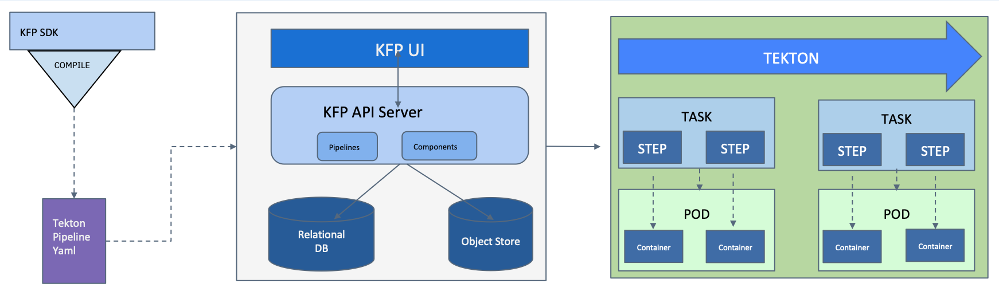

Pipelines
By default, Kubeflow Pipelines on IBM Cloud are running with the Tekton backend. In this guide you’ll learn how to use the Kubeflow Pipelines with the Tekton backend (kfp-tekton). This assumes you have deployed Kubeflow on IBM Cloud.
You can also do a standalone installation of Kubeflow Pipelines with Tekton if you don’t want whole of Kubeflow.
In this tutorial, we use the below single step pipeline as our example
from kfp import dsl
def echo_op():
return dsl.ContainerOp(
name='echo',
image='busybox',
command=['sh', '-c'],
arguments=['echo "Got scheduled"']
)
@dsl.pipeline(
name='echo',
description='echo pipeline'
)
def echo_pipeline(
):
echo = echo_op()
Declare the Python Client for Kubeflow Pipelines
1. Single-user Kubeflow Pipelines deployment with the SDK
- You will be using the Kubeflow Pipelines with Tekton SDK (
kfp-tekton) v0.4.0 or above. - If you have deployed Kubeflow on IBM Cloud using the
kfctl_ibm.v1.2.0.yamlmanifest you can configure (kfp-tekton) SDK to list all your Kubeflow Pipelines experiments as follows:
from kfp_tekton import TektonClient
KUBEFLOW_PUBLIC_ENDPOINT_URL = 'http://<YOUR_KF_PUBLIC_ENDPOINT_URL>'
KUBEFLOW_PROFILE_NAME = None
client = TektonClient(host=f'{KUBEFLOW_PUBLIC_ENDPOINT_URL}/pipeline')
experiments = client.list_experiments(namespace=KUBEFLOW_PROFILE_NAME)
Note: <YOUR_KF_PUBLIC_ENDPOINT_URL> is the EXTERNAL_IP you exposed as a LoadBalancer following this instruction. If you have not done that step during Kubeflow setup, please include port 31380 because the Kubeflow endpoint is exposed with NodePort 31380.
2. Authenticating multi-user Kubeflow Pipelines with the SDK
- You will be using the Kubeflow Pipelines SDK (
kfp-tekton) v0.4.0 or above. - Note that this feature is available with multi-user, auth-enabled Kubeflow installation deployed from the
kfctl_ibm_multi_user.v1.2.0.yamlmanifest.
Note: You’re highly recommended enabling HTTPS for the public endpoint of Kubeflow because this method transports sensitive information like session cookie values over edge network.
It requires authentication via the public endpoint of Kubeflow deployment when using the Kubeflow Pipelines multi-user feature with Pipelines SDK.
You need to provide the following three variables if you’re using an in-cluster Jupyter notebook or a remote client machine:
KUBEFLOW_PUBLIC_ENDPOINT_URL- Kubeflow public endpoint URL. You can obtain it from commandibmcloud ks nlb-dns ls --cluster <your-cluster-name>.SESSION_COOKIE- A session cookie starts withauthservice_session=. You can obtain it from your browser after authenticated from Kubeflow UI. Notice that this session cookie expires in 24 hours, so you need to obtain it again after cookie expired.KUBEFLOW_PROFILE_NAME- Your Kubeflow profile name
Once you provide the three variables, the SDK can use the following Python code to list all your Kubeflow Pipelines experiments:
from kfp_tekton import TektonClient
KUBEFLOW_PUBLIC_ENDPOINT_URL = 'https://xxxx.<region-name>.containers.appdomain.cloud'
# this session cookie looks like "authservice_session=xxxxxxx"
SESSION_COOKIE = 'authservice_session=xxxxxxx'
KUBEFLOW_PROFILE_NAME = '<your-profile-name>'
client = TektonClient(
host=f'{KUBEFLOW_PUBLIC_ENDPOINT_URL}/pipeline',
cookies=SESSION_COOKIE
)
experiments = client.list_experiments(namespace=KUBEFLOW_PROFILE_NAME)
Pipelines components like experiments and runs are isolated by Kubeflow profiles. A Kubeflow user can only see Pipelines experiments and runs belonging to this user’s Kubeflow profile.
Upload pipelines
Once you have declared the Python client, your Kubeflow pipelines can be uploaded using Python.
Run the following code inside a Python session to upload the pipelines. This example shows different versions of the pipeline using the Python client.
import os
# Initial version of the compiled pipeline
pipeline_file_path = 'echo_pipeline.yaml'
pipeline_name = 'echo_pipeline'
# For the purpose of this tutorial, we will be using the same pipeline for both version.
pipeline_version_file_path = 'echo_pipeline.yaml'
pipeline_version_name = 'new_echo_pipeline'
# Upload initial version of the pipeline
pipeline_file = os.path.join(pipeline_file_path)
pipeline = client.pipeline_uploads.upload_pipeline(pipeline_file, name=pipeline_name)
# Upload new version of the pipeline
pipeline_version_file = os.path.join(pipeline_version_file_path)
pipeline_version = client.pipeline_uploads.upload_pipeline_version(pipeline_version_file,
name=pipeline_version_name,
pipelineid=pipeline.id)
Run pipelines from the SDK
The TektonClient can run pipelines using one of the below sources:
Run pipelines from the Python DSL source code
To learn about executing pipelines using the Python DSL source code, try the code below in a Python session using the echo_pipeline example.
The create_run_from_pipeline_func takes the DSL source code to compile and run it directly using the Kubeflow pipeline API without
uploading it to the pipeline list. This method is recommended if you are doing quick experiments without version control.
# You can overwrite the pipeline default parameters by providing a dictionary of key-value arguments.
# If you don't want to overwrite the default parameters, then define the arguments as an empty dictionary.
arguments={}
client.create_run_from_pipeline_func(echo_pipeline, arguments=arguments, namespace=KUBEFLOW_PROFILE_NAME)
Run pipelines from the compiled pipeline file
Alternatively, you can also run the pipeline directly using a pre-compiled file.
EXPERIMENT_NAME = 'Demo Experiments'
experiment = client.create_experiment(name=EXPERIMENT_NAME, namespace=KUBEFLOW_PROFILE_NAME)
run = client.run_pipeline(experiment.id, 'echo-pipeline', 'echo_pipeline.yaml')
Run pipelines from the list of uploaded pipelines
Similarly, you can also run the pipeline from the list of uploaded pipelines using the same run_pipeline function.
EXPERIMENT_NAME = 'Demo Experiments'
experiment = client.create_experiment(name=EXPERIMENT_NAME, namespace=KUBEFLOW_PROFILE_NAME)
# Find the pipeline ID that you want to use.
client.list_pipelines()
run = client.run_pipeline(experiment.id, pipeline_id='925415d5-18e9-4e08-b57f-3b06e3e54648', job_name='echo_pipeline_run')